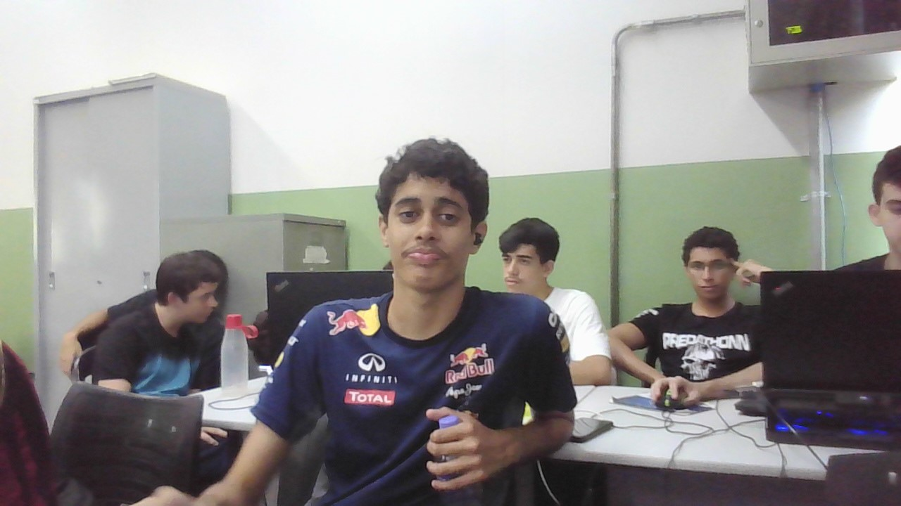

Habilidades
- HTML 5
- CSS 3
- JavaScript
- UML

Sou professor de tecnologia Analise de Desenvolvido de Sistemas, apaixonado por ensinar tecnoçogia.
Atuo na area desde 2008, buscando sempre unir teoria com pratica nas disciplinas de Desenvolvido Web, Engenharia de Software e Analise e Projetp de Sistemas.